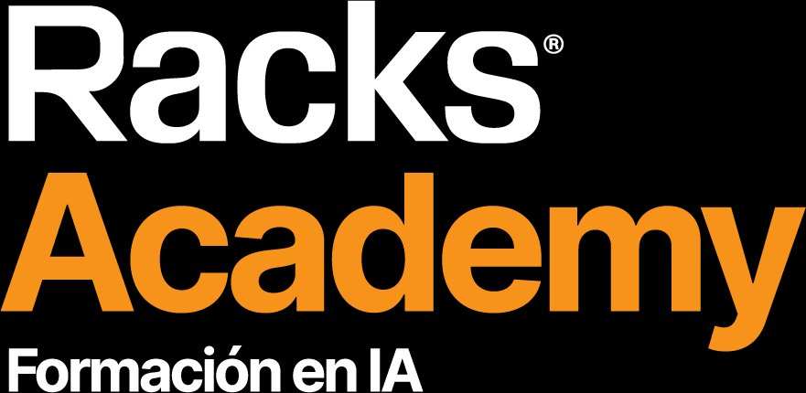
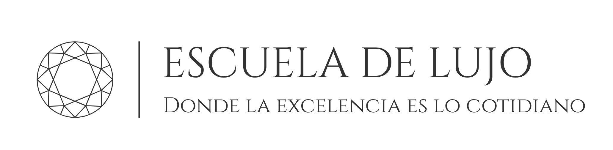

Encuentra el dinero que tu negocio está dejando escapar.
Para infoproductores que ya tienen producto, pero ven cómo el funnel no convierte lo que debería. Responde unas preguntas sobre tu lista, tu oferta y tu sistema de venta. El diagnóstico se adapta a tus respuestas y lo ves al instante.
3 minutos. Resultado al instante.
¿Qué vas a ver en tu diagnóstico?
Una radiografía honesta de tu sistema de venta.
Nada de consejos genéricos. Todo lo que te diga sale de lo que tú mismo respondas. Si no se puede afirmar con tus datos, no se afirma.
-
01.
Tu nivel de madurez de monetización, de 1 a 5
Con el radar de las 5 dimensiones de tu sistema: captación, lista, conversión, recurrencia y medición.
-
02.
Tu fuga principal, con nombre y apellidos
El punto exacto donde tus propias respuestas dicen que se está escapando más dinero. Y por qué importa.
-
03.
El potencial conservador de tus activos
Calculado con asunciones a la vista que puedes ajustar tú mismo. Aritmética, no promesas.
-
04.
Qué palanca tocar primero, y cuál todavía no
Las prioridades en orden, y en qué no perder tiempo ni dinero por ahora.
3 minutos. Resultado al instante.
Cómo funciona
Tres pasos, sin vueltas.
Respondes las preguntas.
Sobre tu lista, tu oferta y tu forma de vender. El test se adapta a tu modelo de negocio. Tres minutos.
Ves tu diagnóstico al instante.
Nivel de madurez, fuga principal, potencial de tus activos y prioridades. En pantalla, completo.
Si quieres, te doy mi lectura personal.
Me mandas tu resultado por WhatsApp y te digo qué palanca tocaría primero en tu caso concreto. En menos de 24h. Sin llamada de venta disfrazada.
Los funnels complejos son una pérdida de tiempo para la mayoría si ni siquiera están haciendo bien lo sencillo.
Clientes con los que he trabajado
 Talent Network
Talent Network

Tutellus
Digital Riders
Racks Academy
Escuela de Lujo Ana Moreno Marín
Ana Moreno Marín
 Zeke Novarino
Zeke Novarino
 Tuto Biohacker
Tuto Biohacker
Empieza por el diagnóstico.
Gratis, al instante, y sin dejar tu email hasta el final. Lo que descubras es tuyo, hagas lo que hagas después.
3 minutos. Resultado al instante.